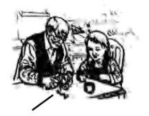

2025年北京市中考英语真题 · 完形填空 第13、14、15、16、17、18、19、20题
二、完形填空（每题1分，共8分）
阅读下面的短文，掌握其大意，然后从短文后各题所给的A、B、C、D四个选项中，选择最佳选项。

The New Year party was usually held at my aunt’s house and my favorite part was the apple cake. At the age of 11, when I first found out that my grandfather, who was never in the kitchen, was the master behind it, I was greatly ____13____ . And I thought that this was the perfect chance to get the recipe (制作方法), and that I could actually have a time to ____14____ with him.
Since then, I would go to my aunt’s early on the morning of New Year’s Day, and we’d make the cake together happily. I was amazed that Grandpa could peel an apple in one rind. And we’d mix everything and put it into the oven. Once the cake was done, the house would immediately smell like apples.
But as I got older, so did Grandpa.
One New Year’s Day, as I was taking out the apples from the shopping bag ____15____ as usual, he looked at me and said, “Sophia, what are you doing?”
I was shocked. I knew that he was beginning to forget things, but I didn’t think he would forget this. It was our ___16___ . It was our time of bonding (联络感情). My heart ached. “We’re making the apple cake. You know, we always make a cake on New Year’s Day.”
And he said, “Apple cake? Can you teach me?”
Now, I was terrified (很害怕的). Still, I ____17____ Grandpa in making the cake because I didn’t want this tradition to die. But the whole time it just didn’t feel the same.
Fast-forward to this New Year, Grandpa was in hospital, and we’d have our family get together there. To bring a bit of ____18____ to the family, I decided to make the apple cake at home by myself. But I was ____19____ myself the whole time. I was afraid the cake was going to taste terrible because it didn’t have Grandpa’s touch.
At the hospital, everyone was surrounding (围绕) him, creating some ____20____ . Grandpa looked down at the cake, and then looked back up at me and smiled. And I felt memories of our shared moments flooding back to him.
Even though he was in hospital, it felt like we had made the cake together.
13. A. surprisedB. worriedC. scaredD. satisfied
14. A. compareB. connectC. studyD. perform
15 A. cheerfullyB. proudlyC. nervouslyD. curiously
A. cheerfullyB. proudlyC. nervouslyD. curiously
16. A. recordB. ruleC. interestD. tradition
17. A. servedB. guidedC. followedD. protected
18. A. trustB. companyC. respectD. comfort
19. A. cheatingB. excusingC. doubtingD. thanking
20. A. spaceB. wealthC. magicD. warmth